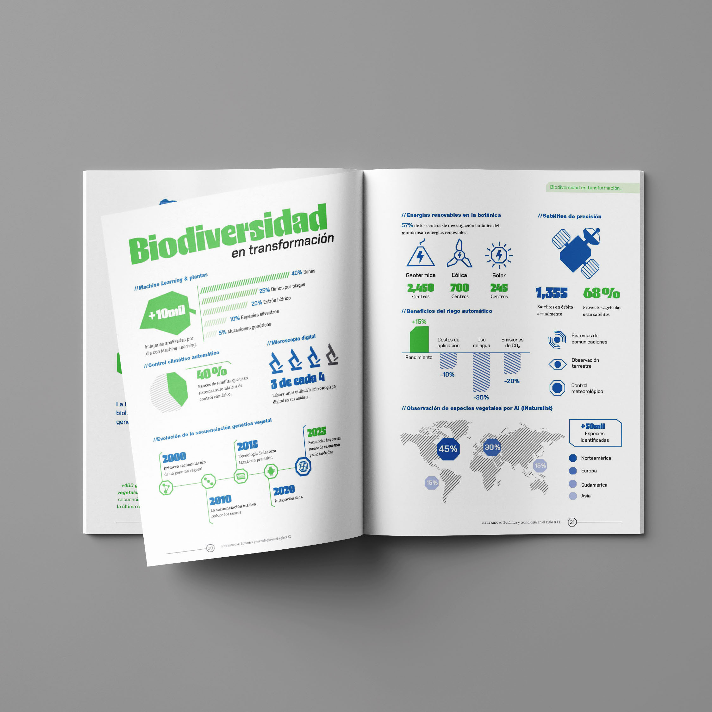
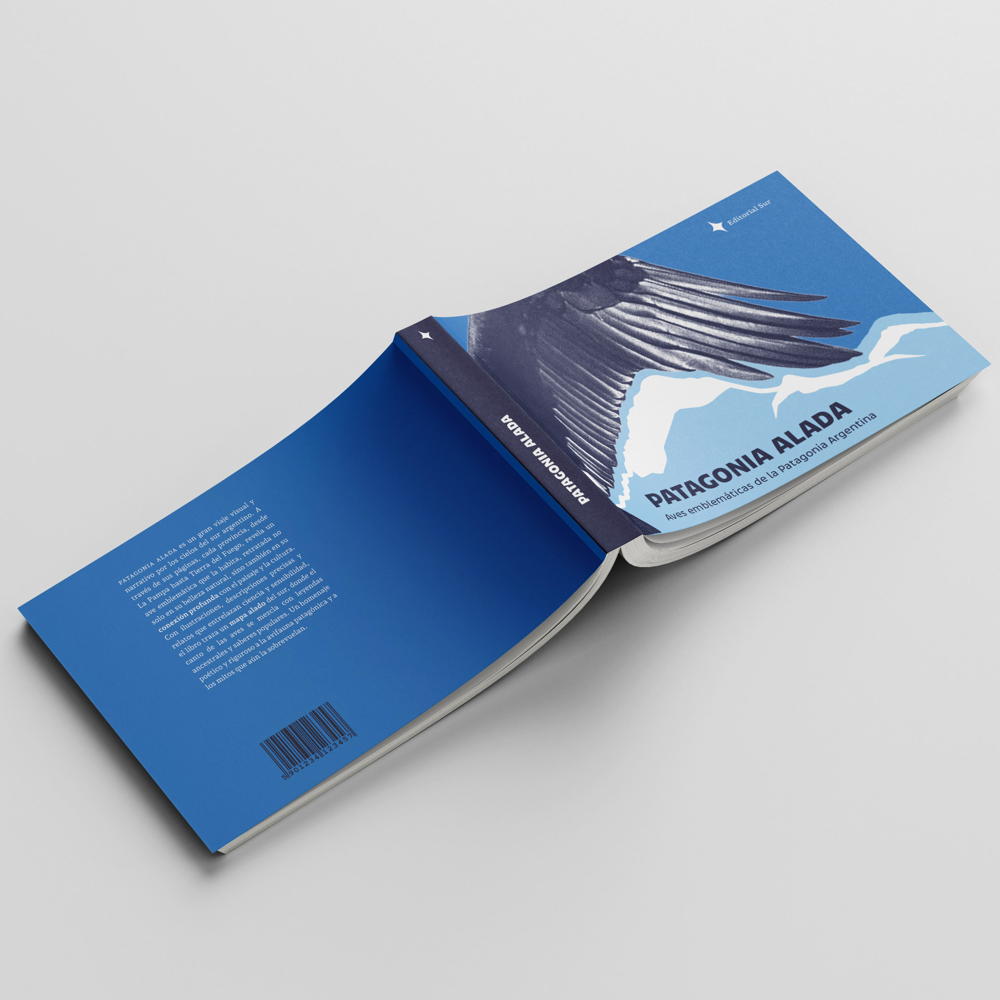
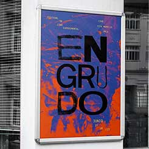
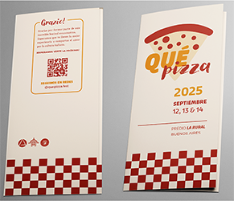

Bruno Ochoa
Estudiante de Diseño y Comunicación Visual
Sobre mi
Estudiante de cuarto año de la Licenciatura en Diseño y Comunicación Visual en la Universidad Nacional de Lanús. Me interesa especialmente la tipografía, tanto desde su proceso de diseño como desde sus posibilidades dentro de diferentes proyectos de comunicación visual. También tengo interés en el diseño editorial, la construcción de identidades visuales y la experimentación gráfica. Me considero una persona curiosa y comprometida con el aprendizaje, siempre buscando incorporar nuevos conocimientos, explorar herramientas y ampliar mis recursos para abordar cada proyecto de manera creativa y consciente.
Algunos trabajos destacados




Estudios
Licenciatura en Diseño y Comunicación Visual
Universidad Nacional de Lanús | En curso
Habilidades
- Adobe Creative Cloud: Illustrator, Photoshop, InDesign
- Canva
- Conocimientos básicos de HTML/CSS
- Diseño editorial
- Diseño tipográfico
- Identidad visual / Branding
Experiencia
-
Diseñador Creativo Freelance
Proyectos independientes (Enero 2023 – Actualidad)
Diseño y optimización de piezas gráficas para redes sociales (Instagram/Facebook) para pequeños comercios y emprendimientos, mejorando su consistencia visual.
Creación de material promocional apto para imprenta (folletos, flyers, packaging y cartelería), realizando el armado de originales y control de archivos en varios formatos.
Asesoramiento directo a clientes independientes para traducir sus necesidades comerciales en soluciones estéticas y funcionales.
-
Nimara Artesanal
Gestión Comercial y Comunicación Visual (Dic 2025 - Actualidad)
Gestión integral del emprendimiento, control de calidad visual y atención personalizada.
Gestión y curaduría del contenido estético para redes sociales y mensajería.
Coordinación de logística, organización de stock y optimización del flujo de entregas a clientes.
-
Estudio Girasol
Gestión Comercial y Comunicación Visual (Feb 2021 – Ene 2022)
Gestión integral del emprendimiento, participando activamente en la cadena de producción, control de calidad visual y atención personalizada.
Gestión y curaduría del contenido estético para redes sociales y mensajería, asegurando una comunicación clara y alineada a la identidad de la marca.
-
Transporte Rincón
Venta y Asesoramiento (Mar 2021 – Dic 2021)
Atención directa al público, asesoramiento al cliente y resolución de consultas operativas.
Manejo de sistemas de gestión digital, control de disponibilidad y administración de caja.